来源：https://wirt1hqfsv.feishu.cn/docx/XBphdNmROojezRxXGvacIHywnbO
圈友们好，我是花甲刺客，专注于搜一搜渠道的幕后玩家。
最近很多关于玩公众号在看一看爆推荐流量的，收益确实不错（当然也有很多做不起来的）。公众号流量主到底好不好做？其实已经有很多人放弃了的（公众号初期就有不少团队几千个号的在薅流量主收益），不过按最近的情况来看，感觉公众号流量主及相关项目这块又会慢慢复苏了，跟以前玩流量主的感觉不一样了。
玩过搜一搜的就知道，官方经常各种更新机制，玩公众号流量主项目的兄弟应该也能体会到流量一起一伏，甚至断崖的情况。那么如果手里仅有的几个号限流掉收录了，没号玩了；或者跑通了找到收益起来了，想矩阵放大又头疼解决不了新增账号的问题。
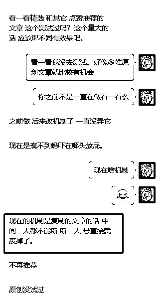
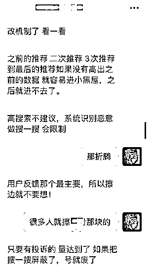
本文主要给大家分享1个公户代收50个公众号流量主收益的操作方法。
每个人可以注册一个个人号，自己的注册完后，可以找家人、亲戚朋友等待熟人注册。
然后把这些注册好的号，通过绑定运营者的方式，绑定要自己微信上。
如果你的数量特别多，但用于绑定的微信又不够，可以找我帮忙把所有公众号全绑定在一个微信上，方便统一管理。注意是所有，没有数量限制。（正常只能绑定5个个人）
优点：0成本
缺点：处理流量主收款比较麻烦（下文会有统一代收的方法）
为避免广告嫌疑，此处不展开介绍。确实有需要的可找我对接
优点：直接拿到成品即可使用。（适合跑出结果想放大的个人或团队，可以无限复制铺量，但要注意风控问题）
缺点：除了需要花钱没啥缺点
那么解决了账号的问题，我们怎样处理流量主的收益问题呢？个人主体的代收方法很少看到有人分享过，接着往下看
【本文仅分享个人主体公众号的流量主代收操作，个体/企业方法同理，规则稍有不同的可在星球搜索解决】
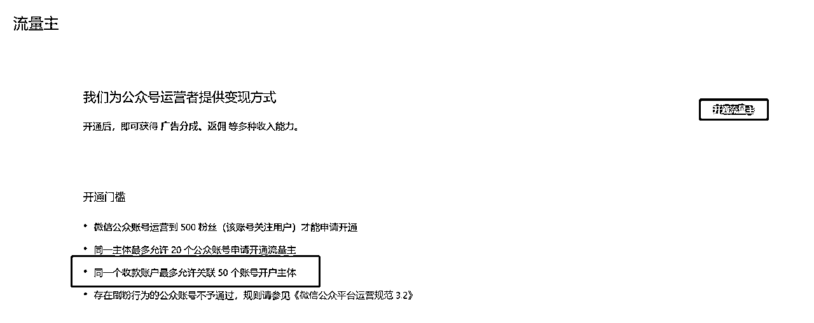
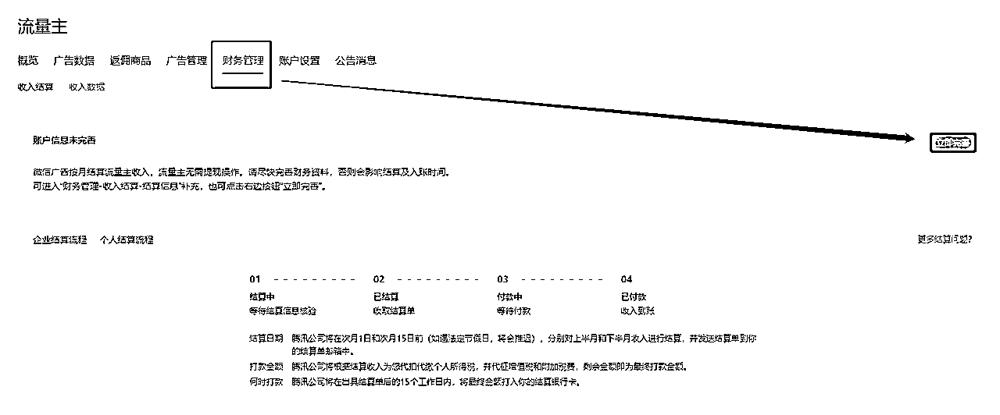
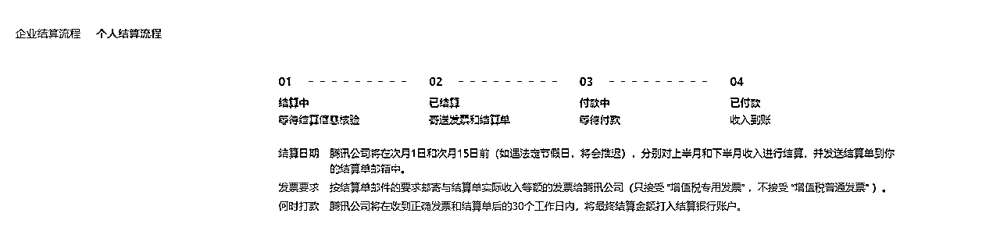
上面两张图是企业与个人的结算流程 知晓一下即可。
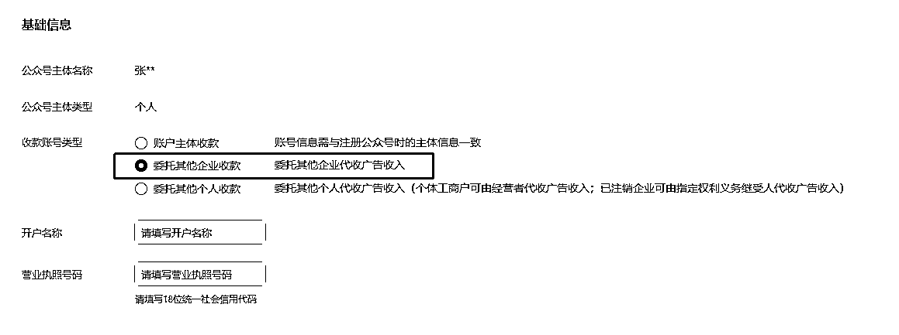
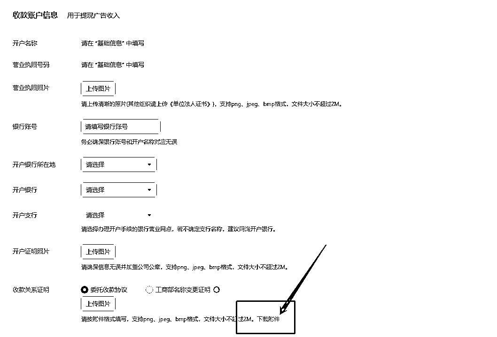
所有需要填写的按照系统要求填写即可。然后下载委托协议，填写：
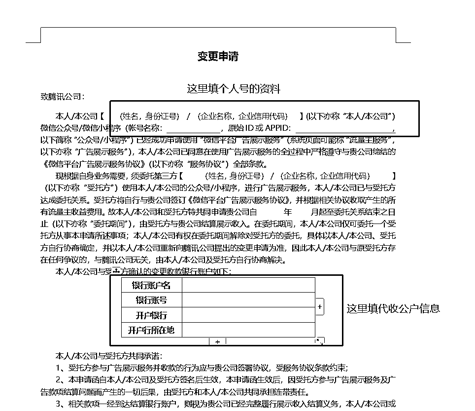
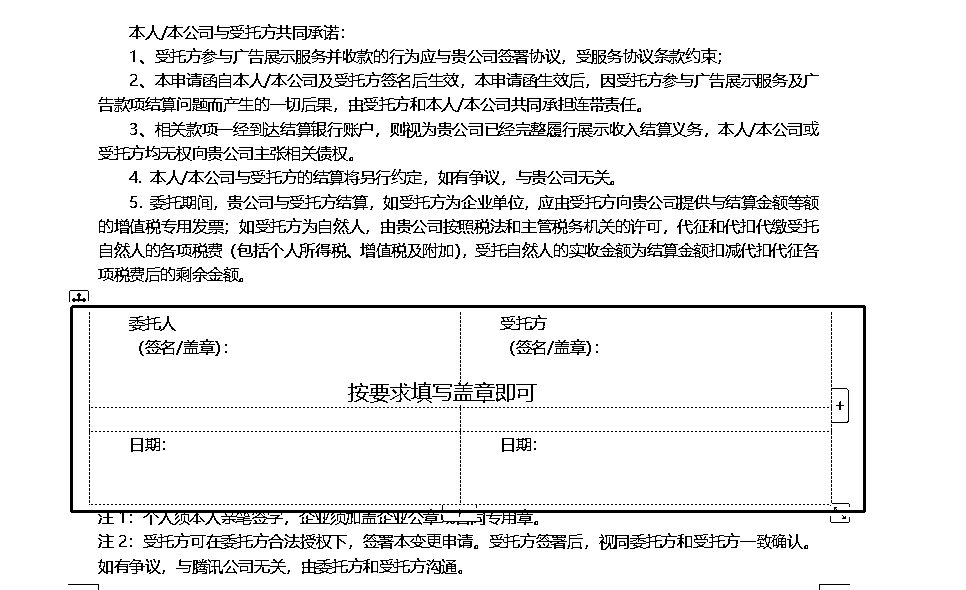
把委托协议及联系信息填写好后以及提交审核即可：
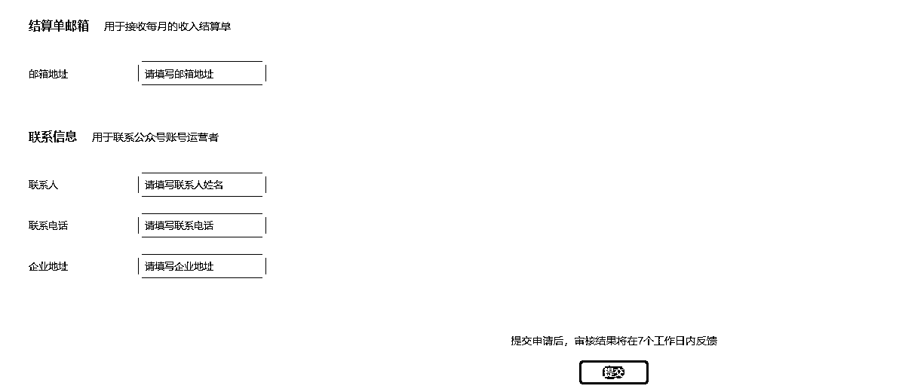
1、此玩法适合有注册公司的团队或个人，需要用到对公账号，一个对公可以代收50个账号。没有对公的兄弟看看就好了。
2、代收的个人号限流了不推荐了能解除对公的关联吗？
不可以，代收50个后无法再代收新的个人号。如果注册的公司只是用来玩项目的，可以去注销、注册新公司开对公继续代收个人号。
以上是我的分享，希望对圈友有所帮助，没分享到位的地方请圈友评论指正。至于本文为什么没有提到个体或公司主体，那是因为当下搜一搜的机制，个人主体为王，不过多解释，你可以去瞧瞧看一看精选上面的号都是什么号。
可以很明确的得告诉大家，公众号爆文流量主有得搞，不然我的群友不会傻到批量矩阵一直搞的地步。
也可以很负责任的告诉大家，做公众号流量主项目，心态要放好，忍受不了寂寞就别入局了，搞钱没你想得那么简单，搜一搜的机制变化特快！只有不断地实操，不断地跟上平台的节奏，坚持就是胜利，不下牌桌就会赢。
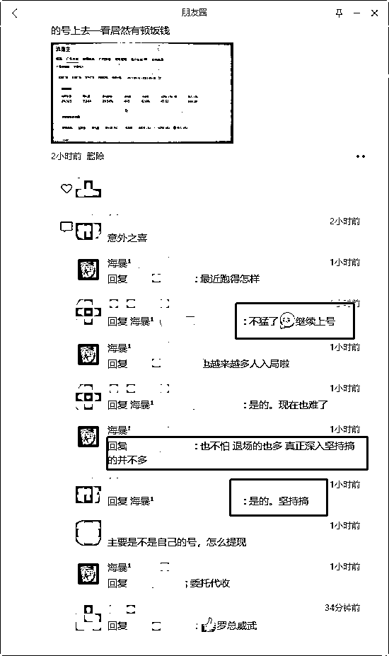
我是花甲刺客，专注于搜一搜渠道的幕后玩家。主玩搜一搜公众号、小程序、视频号领域，欢迎圈友同频交流